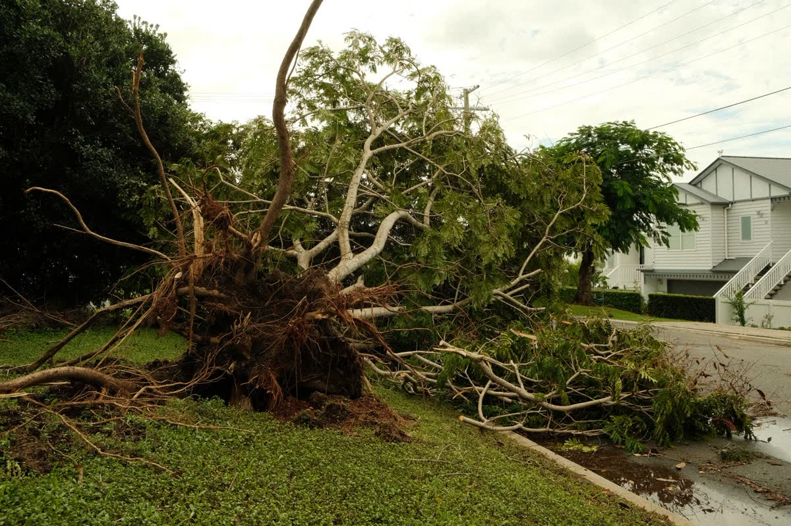

If you live in the Plano area or anywhere across North Texas, you already know the drill. A spring storm rolls through, the sky turns green for a few minutes, hail hammers the roof, and then the sun comes back out like nothing happened. From the ground your roof looks fine. That is exactly the problem. Most storm and hail damage does not announce itself. It shows up quietly, weeks or months later, as a stain on the ceiling or a shingle in the yard.
We have inspected thousands of roofs across North Texas since 2000, and the pattern is always the same. The homeowners who catch damage early spend a little. The ones who wait until water is dripping into the living room spend a lot. This guide walks through what storm damage actually looks like, what you can safely check yourself, and the steps to take before you ever pick up the phone to your insurance company.

Why North Texas roofs take such a beating
Hail is the big one here. North Texas sits right in the part of the country where warm, moist air collides with cold fronts, and that combination builds the tall storms that drop large hail. The National Weather Service explains how these storms form and why they turn dangerous so fast in its guide to thunderstorms and hail safety. Add in the straight-line winds that come with our spring and summer storms, and a roof out here works harder than a roof almost anywhere else.
The damage comes in two flavors. Hail bruises and cracks the surface of your shingles, knocking loose the protective granules that shield them from the sun. Wind lifts and creases shingles, breaks their seal, and sometimes tears them off entirely. Both open the door to water, and water is what actually destroys a roof from the inside out.
Signs of hail damage you can look for
You do not need to climb on the roof to spot the early warning signs. In fact, please do not. A steep, wet, or storm-loosened roof is dangerous, and walking it wrong can create damage that was not there before. Instead, look from the ground and around the property for these clues:
- Granules in the gutters and at the base of downspouts. Those little sandy bits are the shingle's sunscreen. A pile of them after a storm means the surface took a beating.
- Dents on soft metal. Check gutters, downspouts, vents, and any metal flashing. If hail dented the metal, it hit the shingles just as hard.
- Splatter marks and dings on siding, fences, decks, and the AC unit. Hail does not aim. If it marked up the rest of your property, it marked up the roof.
- Shingles in the yard or driveway. Whole or partial shingles on the ground are a clear sign wind broke the seal and lifted them.
- Bruises you can feel. On a shingle that has already come loose, hail hits show up as dark, soft spots that give slightly under a thumb, like a bruise on fruit.
The honest truth about hail damage: most of it is genuinely hard to see, even for trained eyes, from the ground. That is not a sales pitch, it is physics. The bruising that matters most sits on the upward-facing surface of the shingle. This is exactly why a proper free roof inspection exists, and why we never charge for one.
Signs of wind damage
Wind damage is often easier to see than hail. Look for shingles that are curled, cracked, or lifted at the corners. Look for bare spots where the shingle is simply gone. Around chimneys, vents, and skylights, check whether the flashing, the metal that seals those joints, has pulled loose or bent. Those transitions are the most common place a roof starts to leak, because they are where water is already being funneled.
Inside the house, the tell is water. A brown ring on a ceiling, a musty smell in the attic, or peeling paint high on a wall all point to water finding its way in. By the time you see it inside, the roof has usually been open to weather for a while.
What to do after a North Texas storm, in order
When you think a storm may have done damage, the order you do things in matters. Rushing to file a claim before anyone has looked at the roof can work against you. Here is the sequence we walk our neighbors through:
- Write down the storm date. Note when the hail or high wind actually hit. You will need it, and memories get fuzzy fast.
- Take photos from the ground. Photograph the dents on the gutters, the granules, the marked-up siding, anything you can safely reach. Time-stamped photos help.
- Get a professional inspection before you call your insurer. A real inspection tells you whether you even have a claim worth filing. If the damage is minor, a simple roof repair may cost less than your deductible, and you keep the claim on your record for nothing.
- Then decide on the claim. If the damage is real, document it fully and report it. The Insurance Information Institute has a clear, unbiased homeowners insurance resource that explains how the claim process works and what your policy likely covers.
- Let the roofer and the adjuster meet. The strongest claims happen when your roofer is there when the adjuster climbs up, so nothing gets missed and everyone is looking at the same damage.
Repair or replace after a storm?
Not every storm means a new roof. A few lifted shingles and some flashing work is a repair. Widespread hail bruising across the whole roof, especially on an older roof, usually points to replacement. Age matters here too. If your roof was already near the end of its life, a hard hail season can be what pushes it over. We wrote a companion guide on the signs you need a full roof replacement and what affects the cost if you want to think that part through.
The point of catching storm damage early is simple. A small opening you fix this month is a repair. The same opening left through a North Texas summer of heat and more storms becomes rotted decking, soaked insulation, and a much bigger bill. Time is not on your side once the roof is open.
The bottom line
After a big storm, do not trust the view from the driveway. Look for the quiet signs, granules, dents, splatter, and stray shingles, then get a straight answer from someone who does this for a living. We have helped North Texas homeowners through hail season for more than two decades, and the free inspection exists precisely so you never have to guess.
Storm and hail damage FAQs
How can I tell if my roof has hail damage?
Look for dark, soft bruises on shingles, granules washed into gutters and downspouts, dented metal vents and flashing, and splatter marks on siding or fences. Much of the damage is hard to see from the ground, so a professional inspection confirms it for certain.
Should I file an insurance claim for storm damage?
If a storm caused real damage, it is usually worth documenting and reporting. Take photos, note the storm date, and get a professional inspection first so you know what you are dealing with. We help document the damage and coordinate with your carrier.
How long after a storm should I have my roof checked?
Sooner is better. Small openings from wind or hail let water in over the following weeks, and most insurance policies put time limits on storm claims. A free inspection soon after the storm protects both your roof and your claim.